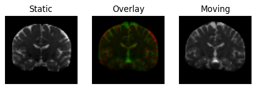
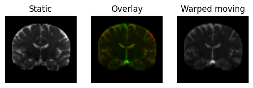
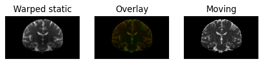

This example explains how to register 3D volumes using the Symmetric Normalization (SyN) algorithm proposed by Avants et al. [Avants09] (also implemented in the ANTs software [Avants11])
We will register two 3D volumes from the same modality using SyN with the Cross -Correlation (CC) metric.
/var/folders/mf/vqrgf1295ps9hnbyyvv6vtbm0000gn/T/ipykernel_46287/3519930129.py:1: UserWarning: Pass ['name'] as keyword args. From version 2.0.0 passing these as positional arguments will result in an error.
hardi_fname, hardi_bval_fname, hardi_bvec_fname = get_fnames('stanford_hardi')
The second one will be the same b0 we used for the 2D registration tutorial
/var/folders/mf/vqrgf1295ps9hnbyyvv6vtbm0000gn/T/ipykernel_46287/3656412170.py:1: UserWarning: Pass ['name'] as keyword args. From version 2.0.0 passing these as positional arguments will result in an error.
t1_fname, b0_fname = get_fnames('syn_data')
As we did in the 2D example, we would like to visualize (some slices of) the two volumes by overlapping them over two channels of a color image. To do that we need them to be sampled on the same grid, so let’s first re-sample the moving image on the static grid. We create an AffineMap to transform the moving image towards the static image
/var/folders/mf/vqrgf1295ps9hnbyyvv6vtbm0000gn/T/ipykernel_46287/2104462567.py:2: UserWarning: Pass ['domain_grid_shape', 'domain_grid2world', 'codomain_grid_shape', 'codomain_grid2world'] as keyword args. From version 2.0.0 passing these as positional arguments will result in an error.
affine_map = AffineMap(pre_align,
/var/folders/mf/vqrgf1295ps9hnbyyvv6vtbm0000gn/T/ipykernel_46287/2072433761.py:1: UserWarning: Pass ['slice_index', 'slice_type', 'ltitle', 'rtitle', 'fname'] as keyword args. From version 2.0.0 passing these as positional arguments will result in an error.
regtools.overlay_slices(static, resampled, None, 1, 'Static', 'Moving',

.. figure:: input_3d.png :align: center
Static image in red on top of the pre-aligned moving image (in green).
We want to find an invertible map that transforms the moving image into the static image. We will use the Cross-Correlation metric
metric = CCMetric(3)
Now we define an instance of the registration class. The SyN algorithm uses a multi-resolution approach by building a Gaussian Pyramid. We instruct the registration object to perform at most \([n_0, n_1, ..., n_k]\) iterations at each level of the pyramid. The 0-th level corresponds to the finest resolution.
/var/folders/mf/vqrgf1295ps9hnbyyvv6vtbm0000gn/T/ipykernel_46287/3938536297.py:2: UserWarning: Pass ['level_iters'] as keyword args. From version 2.0.0 passing these as positional arguments will result in an error.
sdr = SymmetricDiffeomorphicRegistration(metric, level_iters)
Execute the optimization, which returns a DiffeomorphicMap object, that can be used to register images back and forth between the static and moving domains. We provide the pre-aligning matrix that brings the moving image closer to the static image
/var/folders/mf/vqrgf1295ps9hnbyyvv6vtbm0000gn/T/ipykernel_46287/3163846727.py:1: UserWarning: Pass ['static_grid2world', 'moving_grid2world', 'prealign'] as keyword args. From version 2.0.0 passing these as positional arguments will result in an error.
mapping = sdr.optimize(static, moving, static_affine, moving_affine, pre_align)
Now let’s warp the moving image and see if it gets similar to the static image
/var/folders/mf/vqrgf1295ps9hnbyyvv6vtbm0000gn/T/ipykernel_46287/3710543132.py:1: UserWarning: Pass ['slice_index', 'slice_type', 'ltitle', 'rtitle', 'fname'] as keyword args. From version 2.0.0 passing these as positional arguments will result in an error.
regtools.overlay_slices(static, warped_moving, None, 1, 'Static',

.. figure:: warped_moving.png :align: center
Moving image transformed under the (direct) transformation in green on top of the static image (in red).
And we can also apply the inverse mapping to verify that the warped static image is similar to the moving image
/var/folders/mf/vqrgf1295ps9hnbyyvv6vtbm0000gn/T/ipykernel_46287/992749723.py:2: UserWarning: Pass ['slice_index', 'slice_type', 'ltitle', 'rtitle', 'fname'] as keyword args. From version 2.0.0 passing these as positional arguments will result in an error.
regtools.overlay_slices(warped_static, moving, None, 1, 'Warped static',

.. figure:: warped_static.png :align: center
Static image transformed under the (inverse) transformation in red on top of the moving image (in green). Note that the moving image has a lower resolution.
References
.. [Avants09] Avants, B. B., Epstein, C. L., Grossman, M., & Gee, J. C. (2009). Symmetric Diffeomorphic Image Registration with Cross-Correlation: Evaluating Automated Labeling of Elderly and Neurodegenerative Brain, 12(1), 26-41.
.. [Avants11] Avants, B. B., Tustison, N., & Song, G. (2011). Advanced Normalization Tools (ANTS), 1-35.